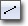

UDN
Search public documentation:
CurveEditorUserGuide
日本語訳
中国翻译
한국어
Interested in the Unreal Engine?
Visit the Unreal Technology site.
Looking for jobs and company info?
Check out the Epic games site.
Questions about support via UDN?
Contact the UDN Staff
中国翻译
한국어
Interested in the Unreal Engine?
Visit the Unreal Technology site.
Looking for jobs and company info?
Check out the Epic games site.
Questions about support via UDN?
Contact the UDN Staff
UE3 Home > Unreal Editor and Tools > Curve Editor User Guide
UE3 Home > Matinee & Cinematics > Curve Editor User Guide
UE3 Home > Cinematic Artist > Curve Editor User Guide
UE3 Home > Matinee & Cinematics > Curve Editor User Guide
UE3 Home > Cinematic Artist > Curve Editor User Guide
Curve Editor User Guide
Overview
Layout
Tool bar
| Fit the graph to the current visible tracks horizontally. | |
| Fit the graph to the current visible tracks vertically. | |
| Fit the graph horizontally and vertically to all points of the current visible tracks. | |
| Fit the graph horizontally and vertically to the selected points of the current visible tracks. | |
| Puts Curve Editor into Pan/Edit mode. | |
| Puts Curve Editor into Zoom mode. | |
| Sets InterpMode for selected keys to Auto-curve mode. Locked, flattened tangents. | |
| Sets InterpMode for selected keys to User curve mode. Locked, user-modified tangents. | |
| Sets InterpMode for selected keys to Curve Break mode. Separate in and out tangents | |
|  | Sets InterpMode for selected keys to Linear mode. |
| Sets InterpMode for selected keys to Constant mode. | |
| Set selected keys' tangents flattened horizontally. | |
| Straightens selected keys' tangents, when broken. | |
| Creates a new tab. | |
| Lists and allows selection of available tabs. | |
| Deletes current tab. |
Track List
 The Track List displays all of the curve tracks currently loaded into the current tab. Tracks are normally loaded external to the Curve Editor by pressing a button associated with a Track in Matinee or a Module in Cascade.
Each track in the Track list displays the name of the property associated with the track along with visibility toggle buttons for each individual curve in the track and an overall visibility toggle button. The individual curve visibility toggle buttons are color-coded to correspond to the components of a vector, with red being X, green being Y, and blue being Z. Red is also the color used for a single scalar float value. In the case of a VectorUniformDistribution, there are two sets of curves with each color having a lighter and darker version.
Right-clicking on a track in the Track List brings up the track list context menu.
The Track List displays all of the curve tracks currently loaded into the current tab. Tracks are normally loaded external to the Curve Editor by pressing a button associated with a Track in Matinee or a Module in Cascade.
Each track in the Track list displays the name of the property associated with the track along with visibility toggle buttons for each individual curve in the track and an overall visibility toggle button. The individual curve visibility toggle buttons are color-coded to correspond to the components of a vector, with red being X, green being Y, and blue being Z. Red is also the color used for a single scalar float value. In the case of a VectorUniformDistribution, there are two sets of curves with each color having a lighter and darker version.
Right-clicking on a track in the Track List brings up the track list context menu.
- Remove Curve - Removes the current track from the Curve Editor.
- Remove All Curves - Clears all tracks loaded in the Curve Editor from all tabs.
- Preset Curve - Replaces the current track's curves with a preset curve.
- Save Preset Curve - Saves the current track's curves to a preset curve.
Graph
The Graph takes up the majority of the Curve Editor interface. It is a graphical representation of the curve with time (input value) along the horizontal axis and the property value (output value) along the vertical axis. Keys along the curve are displayed as points which can be selected and manipulated to visually edit the curve. Right-clicking on the Graph brings up the graph context menu:- Scale Times - Scales the time values all points of all visible tracks, e.g. scales horizontally.
- Scale Values - Scales the values of all points of all visible tracks, e.g. scales vertically.
- Set Time - Allows the Time of the point to be manually set.
- Set Value - Allows the value of the point to be manually set.
- Delete - Deletes the selected point(s).
Controls
Mouse Controls
In Pan/Edit mode:| LMB + Drag on background | Pan view around |
| Mouse Scroll | Zoom in and out |
| LMB on Key | Select point |
| Ctrl + LMB on point | Toggle selection of point |
| Ctrl + LMB on curve | Add new key at clicked location |
| Ctrl + LMB + Drag | Move current selection |
| Ctrl + Alt + LMB Drag | Box select |
| Ctrl + Alt + Shift + LMB + Drag | Box select (add to current selection) |
| LMB + Drag | Zoom Y axis |
| RMB + Drag | Zoom X axis |
| LMB + RMB + Drag | Zoom X and Y axes |
Keyboard Controls
In Pan/Edit mode:| Delete | Delete selected points |
| Z | Puts you into Zoom mode while held. |
Hot Keys
| Ctrl + Z | Undo |
| Ctrl + Y | Redo |
Tabs
 This can be useful when working with a particle system made up of multiple emitters. Sending the curve data for multiple Lifetime modules to the Curve Editor could become extremely confusing since there is no real distinction between them other than possibly coloration if one module is selected or the modules' colors are different.
Adding and removing tracks over and over to keep this from happening would be extremely inefficient. By creating a tab for each emitter, the tracks can be kept separate and identified easily keeping any mistaken editing of the wrong track for the wrong emitter.
This can be useful when working with a particle system made up of multiple emitters. Sending the curve data for multiple Lifetime modules to the Curve Editor could become extremely confusing since there is no real distinction between them other than possibly coloration if one module is selected or the modules' colors are different.
Adding and removing tracks over and over to keep this from happening would be extremely inefficient. By creating a tab for each emitter, the tracks can be kept separate and identified easily keeping any mistaken editing of the wrong track for the wrong emitter.
Interpolation Modes
Auto-generated Curves
 The following choices will be available in the preset drop-down combo boxes:
The following choices will be available in the preset drop-down combo boxes:
- Do Not Preset - Leaves the curve that is present as-is.
- Cos Wave - Generates a curve using the time (horizontal) value as the input to the Cosine function (the vertical value).
- Sine Wave - Generates a curve using the time (horizontal) value as the input to the Sine function (the vertical value).
- Linear Decay - Generates a curve featuring a linear decay.
- User-Set - Allows for loading and using a user-defined curve that was previously saved.
- Frequency - the frequency of the wave over the time period (currently pinned to [0.0..1.0]).
- Scale - the scale factor to multiple the calculated value by. Allows for sizing the curve to the users wishes.
- Offset - the offset to apply to the value (after it is scaled). This allows for ensuring all values are positive, etc.
- StartDecay - the time to start the decay.
- StartValue - the value to start the curve at.
- EndDecay - the time to stop the decay.
- EndValue - the value to end the decay at.
 Note that the curve in this case will require some tweaking. By default, all the auto-generated curves use the AutoSet curve interpolation method. In the Linear Decay case, selecting each point and setting the interpolation method to linear will `correct' the curve.
Note that the curve in this case will require some tweaking. By default, all the auto-generated curves use the AutoSet curve interpolation method. In the Linear Decay case, selecting each point and setting the interpolation method to linear will `correct' the curve.
User-Set Curves
- Do Not Preset - Do not save this curve.
- User-Set - Save this curve.